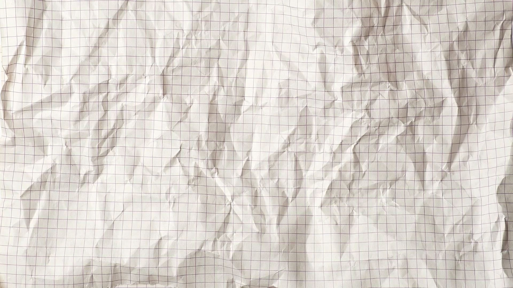
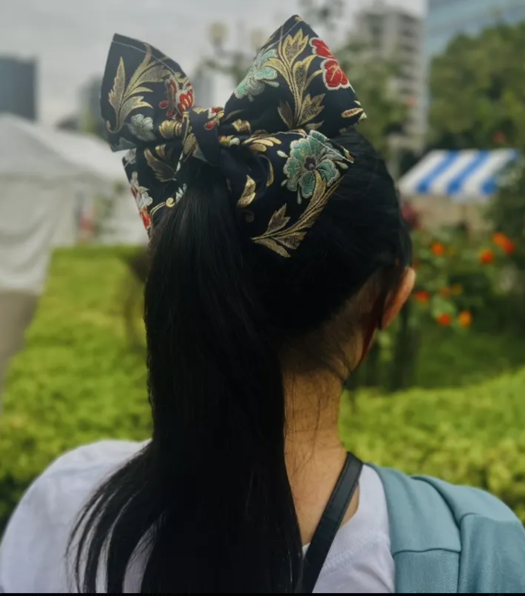

インバウンドで観光客が増える中で、お土産は国外で作られた品が多いというのが現状です。さらに、日本の民家のタンスには３０００万点の和装品が眠っているというデータがあります。
再凛はこれらを問題を掛け合せ、使わられなくなった和装品を使用して、外国人観光客向けにアクセサリーや小物を制作、販売するグループです。
着物のような使われなくなった伝統的な品を普段使いできるものに変える事ができる上に、外国人観光客の方に本物の伝統的な品を使用したお土産を販売できる事に意義を感じています。具体的な商品としては、クラッチバッグ、ヘアゴム、キーホルダー、シュシュなどを制作しています。
メンバーが全員帰国生であるため日本が抱えている問題、そして海外の視点から日本の魅力を見る事ができたため、この団体を始めるに至りました。
さらに、日本の着物産業が衰退している点に着目し、利益の一部を着物産業に寄付していきたいと思っています。
